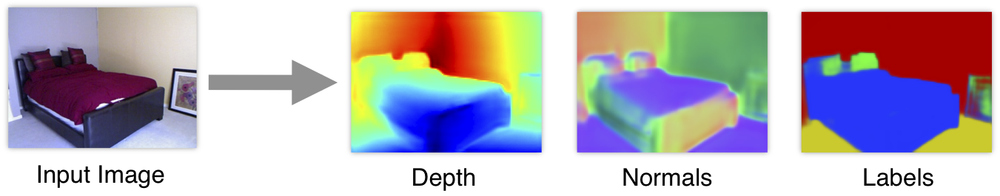

DepthEstimation¶
http://www.cs.nyu.edu/~deigen/dnl/
http://www.cs.nyu.edu/~deigen/depth/
https://arxiv.org/pdf/1607.00730.pdf
https://github.com/yuvval/depth_video
install dnl-depthnormal¶
apt-get install gfortran
apt-get install libopenblas-dev liblapack-dev libatlas-base-dev
apt-get install python-dev
pip install numpy
pip install scipy
apt-get install python-nose
pip install Pillow
pip install ipdb
pip install matplotlib
http://deeplearning.net/software/theano/install.html
git clone git://github.com/Theano/Theano.git
cd Theano/
cp ../dnl-depthnormals/theano_test_value_size.patch .
git apply --check theano_test_value_size.patch
#a faire a la pogne
mkdir /home/luluf/.local/lib/python2.7/site-packages
python setup.py develop --prefix=~/.local
theano/gof/op.py line 542
if isinstance(v, graph.Constant):
return v.value
elif isinstance(v, SharedVariable):
return v.get_value(borrow=True, return_internal_type=True)
elif isinstance(v, graph.Variable) and hasattr(v.tag, 'test_value'):
# ensure that the test value is correct
try:
ret = v.type.filter(v.tag.test_value)
except Exception as e:
# Better error message.
detailed_err_msg = (
"For compute_test_value, one input test value does not"
" have the requested type.\n")
detailed_err_msg += utils.get_variable_trace_string(v)
detailed_err_msg += (
"\nThe error when converting the test value to that"
" variable type:")
# We need to only have 1 args and it should be of type
# string. Otherwise, it print the tuple and so the
# new line do not get printed.
args = (detailed_err_msg,) + tuple(str(arg) for arg in e.args)
e.args = ("\n".join(args),)
raise
return ret
elif isinstance(v, graph.Variable) and hasattr(v.tag, 'test_shape'):
test_value = numpy.empty(v.tag.test_shape, dtype=v.type.dtype)
test_value.fill(v.tag.test_value_fill)
return v.type.filter(test_value, strict=False, allow_downcast=True)
detailed_err_msg = utils.get_variable_trace_string(v)
raise AttributeError('%s has no test value %s' % (v, detailed_err_msg))
theano/configdefaults.py line 772
AddConfigVar(
'compute_test_value',
("If 'True', Theano will run each op at graph build time, using "
"Constants, SharedVariables and the tag 'test_value' as inputs "
"to the function. This helps the user track down problems in the "
"graph before it gets optimized."),
EnumStr('off', 'ignore', 'warn', 'raise', 'pdb'),
in_c_key=False)
AddConfigVar('store_test_value_maxsize',
("Maximum size for test values that are kept. If compute_test_value "
"is enabled, keeps test values smaller than the given size (in "
"number of entries). Beyond that, only the shape is stored; a "
"an array with the same shape and type is created on demand, filled "
"with a single random entry from the array."),
IntParam(sys.maxint),
in_c_key=False)
THEANO_FLAGS=device=gpu0 python demo_depthnormals.py